Sleeping may not seem like a high-tech endeavor. After all, it’s something we all do naturally, without even having to practice. But there are all kinds of complications affecting sleep, from staring at screens to noisy environments to just the everyday stress of being a human. That means almost all of us can benefit from paying more attention to how we sleep, as another part of taking care of ourselves.
That can lead to a lot of questions, from the simple to extremely complicated. What can I do for a noisy bedroom? For a dusty bedroom? How can I fall asleep quicker, and stay asleep when I want to? What does my night’s sleep even look like, anyway?
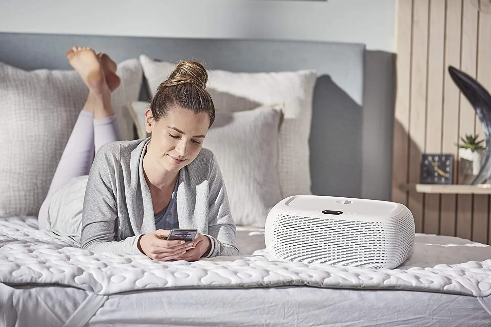
OOLER Sleep System | Image Credit: Kryo Inc.
Luckily, a growing awareness around the importance of sleep has led to some real advances—our updated list of the best sleep tech and gadgets includes a number of CES 2020 winners. And they cover a wide gamut of products, from light therapy glasses to sleep trainers to smart pillows. Even if you think you’re getting a great night’s sleep, you just might find something here that could make it even better. Get the rest you deserve with the 14 best sleep gadgets and sleep tech products including winners from the Men’s Health 2020 Sleep Awards.
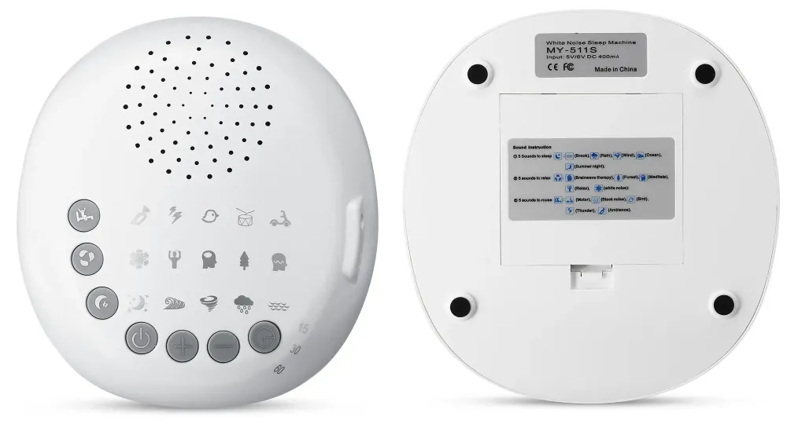
Falling asleep in a noisy environment can be tough, and sometimes ear plugs aren’t the solution. The Brainwave White Noise Sleep Machine takes a more subtle approach, offering 15 sound environments tailored to your needs. It even adapts to the relative noise of the world around you, and can connect to speaker pillows.
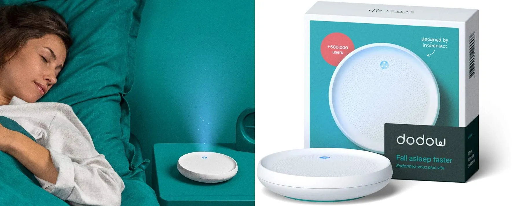
Sleep tech can be really helpful, but ideally we wouldn’t need it; we’d just be that good at sleeping, it would happen without all the extra gadgets. That’s the idea behind the Dodow, a combination of metronome and light system designed to naturally guide you into sleep. With time and practice, through guided breathing and calming your thoughts, you can learn to improve your sleep.
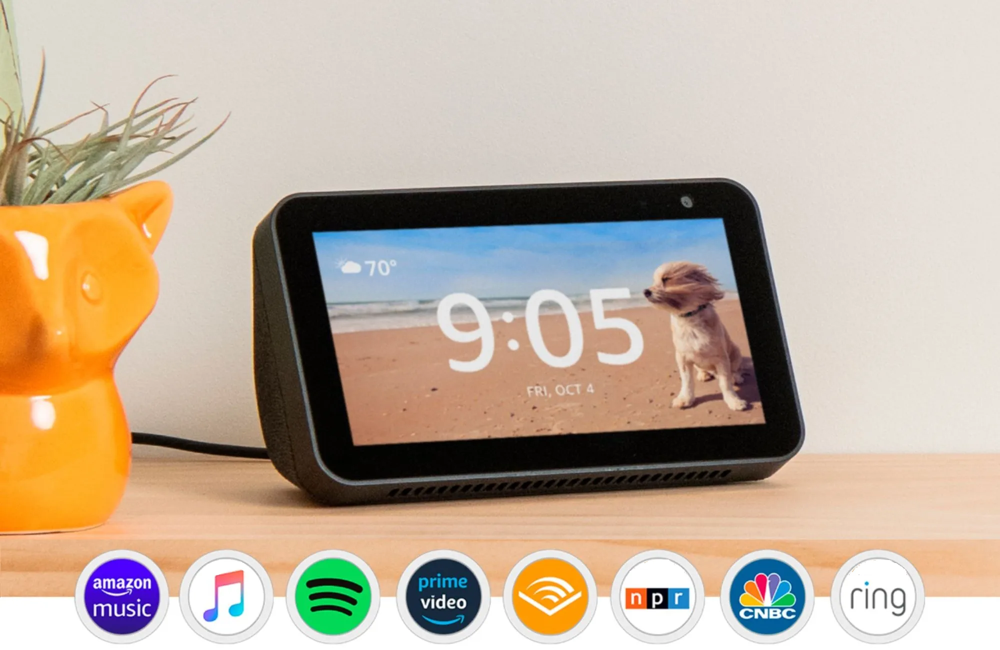
The Amazon Echo Show 5 has everything you’d expect from a smart display: it can play videos and music, responds to Alexa commands, and lets you control other smart home devices. It also makes for a handy smart alarm clock, letting you choose different faces and wake up less jarringly to ambient sunrise lighting.
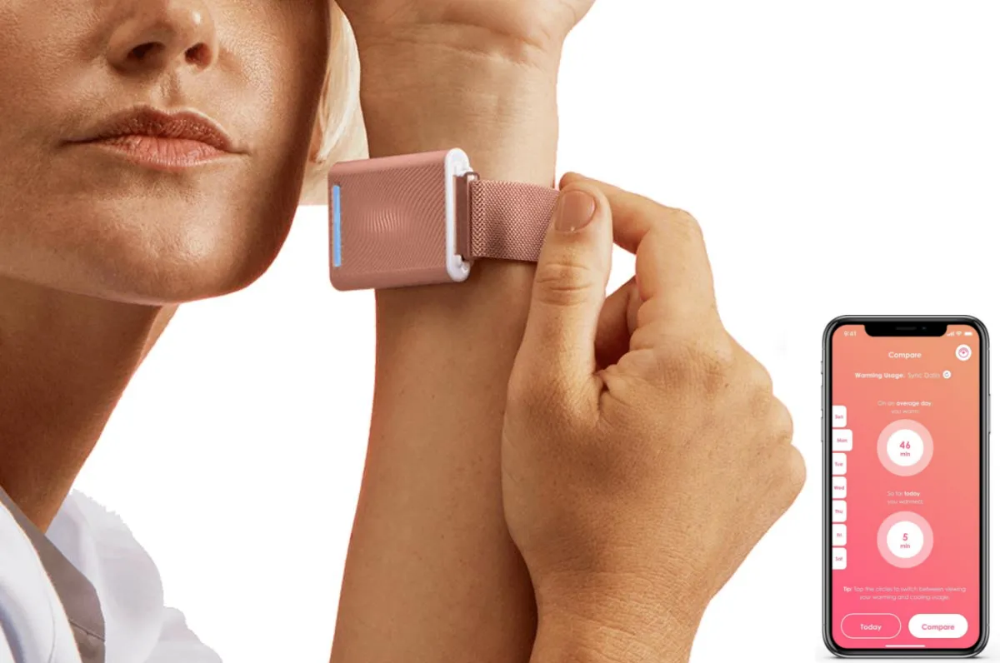
Too hot or too cold—either one can make sleep a challenge, and everyone has their own temperature preference. The right bedding can make a difference, but for a more high-tech approach, try the Embr Wave bracelet. It stimulates the inside of your wrist with warm or cool sensations, helping make the rest of your body comfortable when it’s time to drift off into slumber.
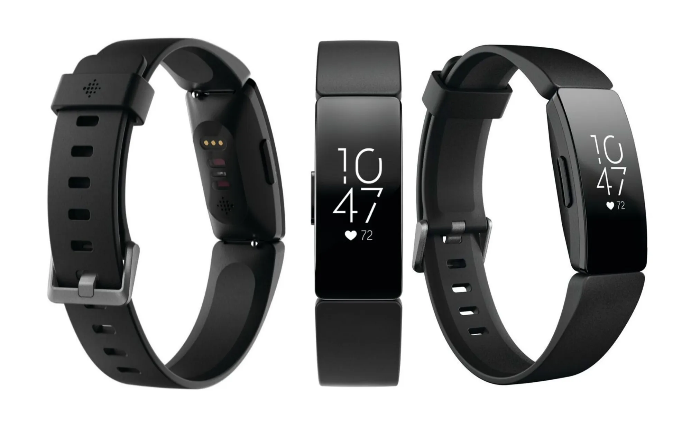
BUY IT HEREThe only data you need from a sleep tracker is how long you slept versus how long you tossed and turned. Fitbit’s Inspire HR provides that, and does it consistently enough that you can spot trends, like whether you sleep better on days you hit the gym. It also includes information about sleep stages, but feel free to ignore it, says Men’s Health sleep expert Dr. W. Christopher Winter, because it’s not super precise and it’s hard to do anything about.
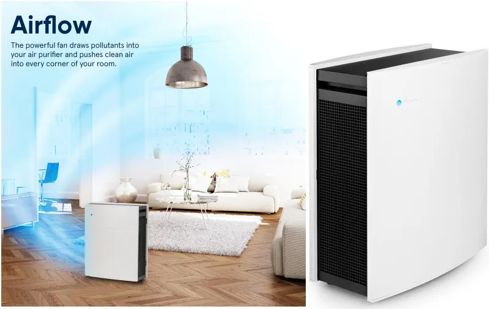
BUY IT HEREFresh air makes sleeping a lot easier, and the Blueair makes some of the best air purifiers on the market. The Classic 480i model is perfect for bedrooms, quietly purifying up to 434 square feet. It’s whisper quiet on the lowest settings, while at higher settings it produces a pleasant white noise that can also help you sleep.
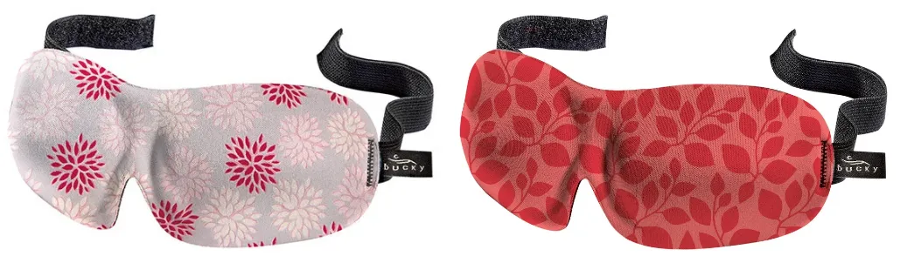
BUY IT HEREA bright room can be a bane for sleeping, and often sleep masks are an uncomfortable solution. Not so with the Blinks Sleep Mask: it’s soft and light, but still blocks out all light. A Velcro strap keeps it from sliding during the night, while molded eye cups make for a pleasing fit.
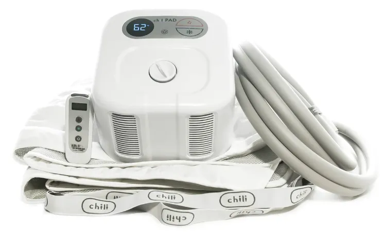
BUY IT HERESmart mattresses can cost thousands of dollars, which doesn’t really make sense to buy if you already have a perfectly good mattress. The ChiliPad Sleep System brings much of that intelligence to your bed at a much more justifiable price. Water piped through the pad lets you adjust the temperature—whether you’re a hot or cold sleeper, you can choose what works for you.
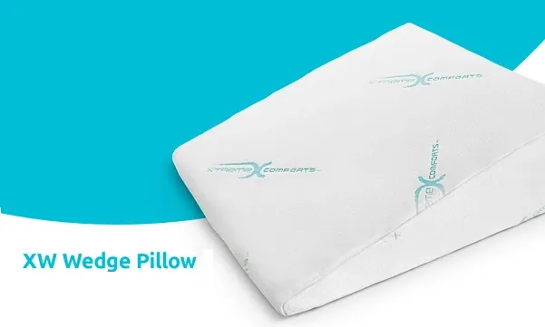
BUY IT HERESnoring solutions are a dime a dozen, but the XW Wedge Pillow boasts an impressive array of anti-snoring features. Its Wedge design with memory form supports the head in a proper elevation while you sleep; this prevents snoring by allowing proper flow of air which aids proper breathing.
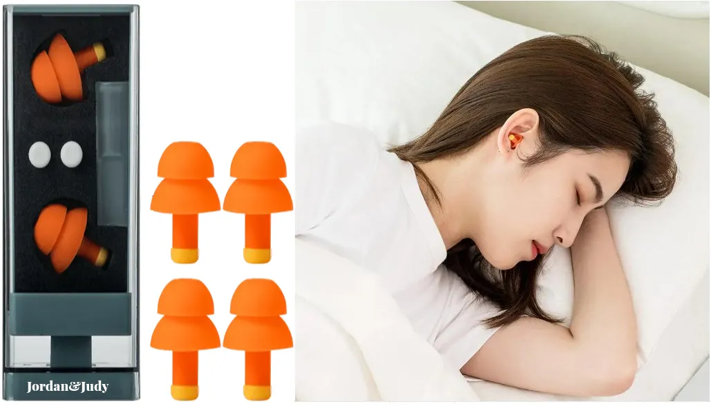
BUY IT HEREIf you’re tossing and turning because of a noisy bedroom, ear plugs may just be your savior. Jordan & Judy’s are among the best: they’re reusable, washable, fit well, and feature active-guard filters to keep you slumbering peacefully.
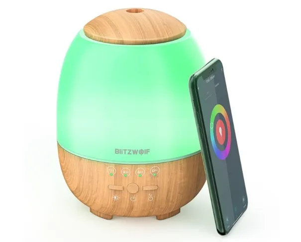
BUY IT HEREDiffusers tend to be utilitarian objects—they don’t exactly scream “style.” BlitzWolf® BW-FUN3 WiFi Essential Oil Diffuser, though, not only does the work of diffusing essential oils, but looks good while doing it. Inspired by lava flows, it’s a refined piece of kit that’ll add a touch of sophistication to any bedroom.
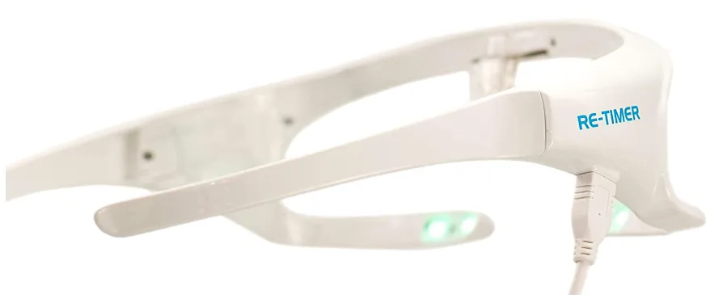
BUY IT HEREGetting back in sync with the cycles of night and day can be a great pathway to better sleeping. Light therapy helps you do that: A solid bar worn across your eyes, the Re-Timer light therapy glasses help you re-sync using light and temperature; they can help revitalize you during those lagging afternoons, and improve your sleep at night.
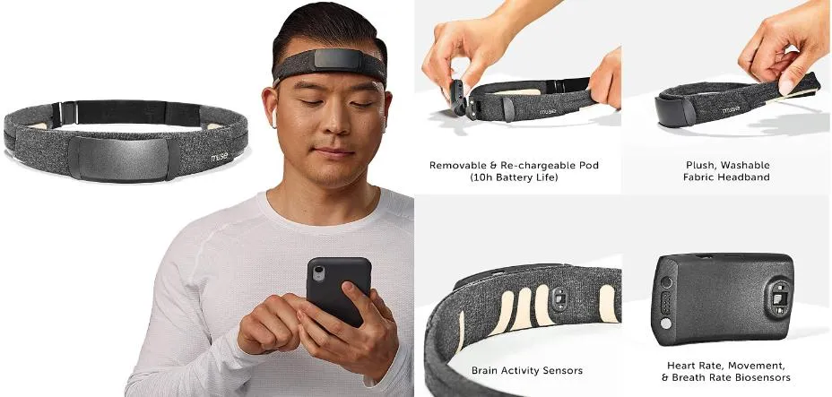
BUY IT HEREWith its multiple sensors, the Muse S gives you feedback on brain activity, heart rate, breathing, and body movements, helping you refine your meditation—and also relax into sleeping. The soothing audio prompts make it simple to use, while the new model improves on earlier designs, featuring a comfortable band and long-lasting battery.
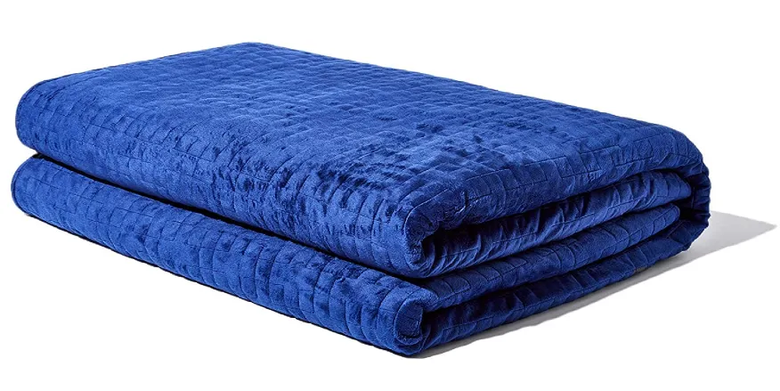
BUY IT HEREWeighted blankets are great for sleeping snug and cozy. Filled with 35 pounds of beads inside a soft micro-plush cover, the Gravity Blanket will make you feel like you’ve just been tucked in, letting you easily drift off to slumberland.
5
ways smart scales can help you stay
healthy
Best
Budget Fitness Trackers Under $50
How to exercise without expensive gym equipment
How
fitness trackers motivate us to keep in
shape
Do you have any tips for keeping fit on a budget? We’d love to hear your ideas, write to us at ideas@getfitech.blog…